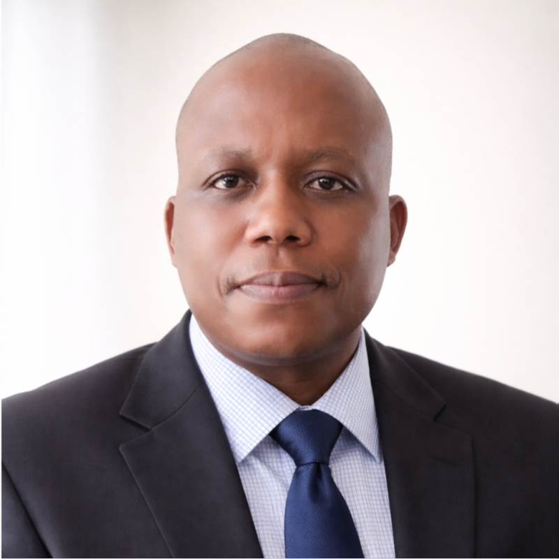

01
IT Consulting & Management
IT strategy, systems optimisation and digital transformation.
Connecting people, technology
and commercial opportunity.
Regional Group President · ICT Director
IT Consultant · Software Engineer · Lecturer
Over 15 years of professional experience. From IT strategy and software engineering to training, customer experience and commercial growth.

As an IT Consultant, Administrator and Lecturer, I apply my expertise in software engineering and multimedia to enhance the institute's operational efficiency and productivity. With over 15 years of experience in this role, I have successfully led the development and execution of comprehensive IT strategies, implemented new technologies, and designed IT training programs for staff.
I am also a certified BSc Hon in Software Engineering with Multimedia from Limkokwing University of Creative Technology. My skills include knowledge management, educational technology, software administration, and software development. I am passionate about creating pipelines that convert raw data into usable formats for data scientists and data consumers to utilize. I am always eager to learn new technologies and share my knowledge with others.
Southern Africa, Caribbean, The Americas & Asia Chamber of Commerce (SACAACC) USA
November 2026 – Present · Remote
Revenue generation, sales leadership, business development, customer acquisition and commercial growth.
Explore my career ↓Available for individual consultancy engagements, short-term assignments, specialised projects, training interventions and professional advisory work.
IT strategy, systems optimisation and digital transformation.
Custom software development, web and mobile applications, databases and system integration.
Data management, reporting, Power BI and business intelligence.
Responsible AI implementation, AI policy, data privacy and risk management.
ICT infrastructure, BPO operations, CRM development, integration and management.
Digital skills, programming, emerging technologies and professional development.
Online course development, LMS implementation and virtual facilitator skills.
Curriculum development, assessment, mentoring and academic development.
Sales operations, call centre management, client services and customer care optimisation.
Working with entrepreneurs, SMEs, universities, training institutions, government departments, NGOs and corporate organisations. From a one-day assignment or five-day training programme to a longer project.
Explore consultancy services ↗A career spanning technology leadership, consultancy and education. Select a role to explore responsibilities and achievements.
Qualifications and academic development in software engineering, multimedia and technology.
Limkokwing University of Creative Technology
Christiaan Dewet Hoerskool
Dansa International College
Limkokwing University of Creative Technology
Christiaan Dewet Hoerskool
Education
Education
Alison
Credential ID 398-16904871
International Institute of Human Capital and Leadership
Alison
Credential ID 2852-18953216
Limkokwing University of Creative Technology
Technical depth across infrastructure, software, data and business operations. Search the capabilities below to find the expertise you need.
Maluti Travel and Tours
January 2006 – February 2016
Provided timely services and concise bookings, with affordable travel aligned to client choices and needs. Planned diversification into tour operations through links with existing tour operators.
Director · February 2013 – Present
Organisation membership
Full professional proficiency
Elementary proficiency
Economic Empowerment · Science and Technology
Professional interests include Anthony Scaramucci and Tony O. Elumelu, C.F.R.
Explore professional interests ↗Professional recommendations from colleagues and peers · May 2024.
“Hard Working”
“His leadership abilities were evident as he often took the initiative to organize study groups and lead team projects.”
I am writing to wholeheartedly recommend Tsepiso Bernard Mohale, as a friend and former schoolmate, I have had the pleasure of witnessing Tsepiso’s remarkable growth and dedication firsthand.
Tsepiso is a person of exceptional character, combining hard work and dedication with a down-to-earth nature that endears him to all. His ability to connect with people and understand their needs is unparalleled, making him a true ‘people’s person.’
Throughout our time at Limkokwing university of creative technology in Malaysia, Tsepiso consistently demonstrated a strong work ethic and a commitment to excellence. Whether working on academic projects or participating in extracurricular activities, he approached every task with determination and a positive attitude.
His leadership abilities were evident as he often took the initiative to organize study groups and lead team projects. Tsepiso’s dedication to helping others succeed is a testament to his generous spirit and his belief in the power of collaboration.
Beyond his academic and interpersonal skills, Tsepiso’s humility and willingness to learn from others stand out. He is always open to feedback and uses it constructively to improve himself and his work. This quality, coupled with his natural talent, makes him an ideal candidate for any endeavor he chooses to pursue.
A collection of professional milestones, training engagements and personal moments. Select an image to take a closer look.
This archive includes historical posts and personal images. Products, prices and event dates pictured belong to those original posts.
Consultancy, specialised projects, training and professional advisory engagements.
Send a WhatsApp messageMaseru, Maseru District, Lesotho
Skype: Tshepi5
Birthday: 16 August
P.O. Box 14899, Maseru 100
B31 Thetsane West, Maseru
Pretoria office
Email: tsepuna@gmail.com
76 Kwartel Street, Pretoria West, Kwaggasrand – 0183